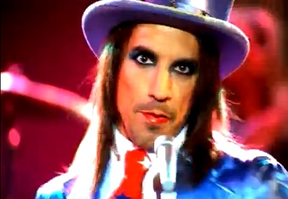
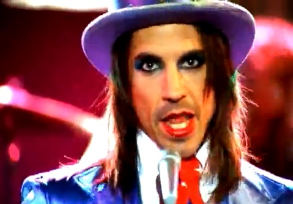
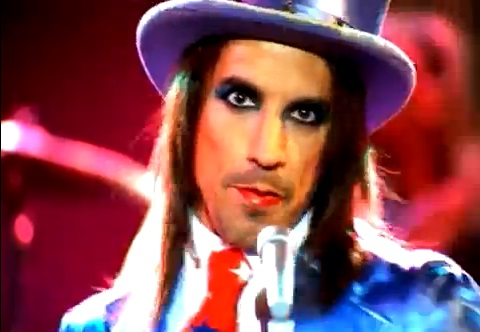
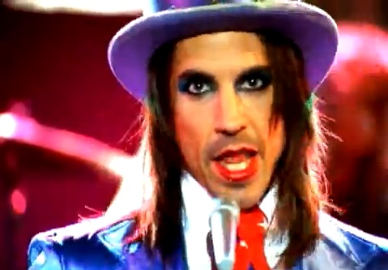
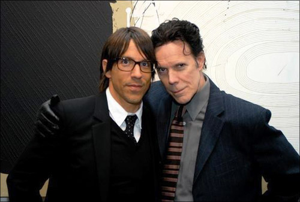
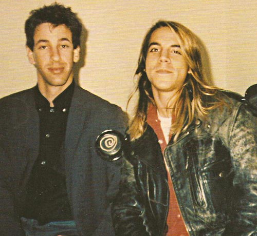

Famed singer, actor and writer Anthony Kiedis was born on November 1, 1962, in Grand Rapids, Michigan. As the lead singer of the Red Hot Chili Peppers, Kiedis is one of best-known figures in alternative rock. His godfather was Sonny Bono, of Sonny & Cher fame. His parents split when Kiedis was 3 years old. Thereafter, he lived with his
mother, Peggy, in Michigan and visited his father, John, in California. His father made most of his money selling drugs, but also dabbled in acting. While with his father, Kiedis was exposed to the Los Angeles club scene, where he got a chance to see such rock acts as the Eagles, Neil Young, Deep Purple and Rod Stewart.
Developing an aversion to authority at an early age, Kiedis acted out in school. He eventually convinced his mother to agree to let him live with his father in California. In his early teens, Kiedis moved in with his father and soon began experimenting with drugs. He started smoking marijuana and later tried heroin,
cocaine, and Quaaludes.

Anthony with his father, John. (2012)
Anthony with his father, John. (2012)
At Fairfax High School, Kiedis met and made friends with Michael Balzary - better known later as Flea - and Hillel Slovak. Slovak had a band known as Anthym and Balzary eventually joined it as the bass player. Kiedis acted as the MC for some of their gigs. In 1982, Kiedis found inspiration for his vocal styling from the hit song,
"The Message," from Grandmaster Flash and the Furious Five. He started a band with friends Slovak and Flea - although they were already in different bands - with Jack Irons on drums the following year. The group that would become known as the Red Hot Chili Peppers became a popular fixture on the L.A. club scene.
Their 1984 self-titled debut didn't sell, but the group started to attract a following with their energetic live shows. Often over-the-top rebels, the Red Hot Chili Peppers even performed a few times while only wearing strategically placed tube socks.
Kiedis's off-stage activities were starting to take over his life. He was using heroin and cocaine heavily, so much so that his bandmates kicked him out of the group for a while. Returning to Michigan for a time, Kiedis went through detox. He returned to Los Angeles and to the band, but did not stay clean for long.
The Red Hot Chili Peppers released their third album, The Uplift Mofo Party Plan, in 1987. The album even made it onto the Billboard 200 album charts. The following year, Kiedis experienced a great personal loss. Longtime friend and bandmate Slovak died of a heroin overdose on June 25, 1988.

Anthony and Hillel Slovak.
Anthony and Hillel Slovak.
Working with producer Rick Rubin, the Red Hot Chili Peppers experienced a major career breakthrough with their next album, BloodSugarSexMagik, in 1991. For the first time in 2006, the Red Hot Chili Peppers reached the top of the Billboard 200 album charts with Stadium Arcadium.
Kiedis became a father for the first time in October 2007, when he and then-girlfriend Heather Christie welcomed a son, Everly Bear. The couple parted ways in 2008.